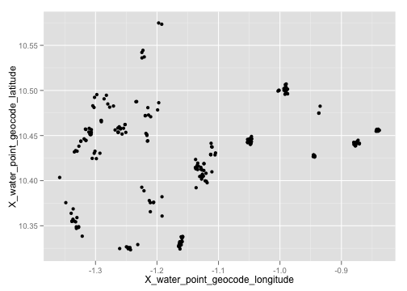
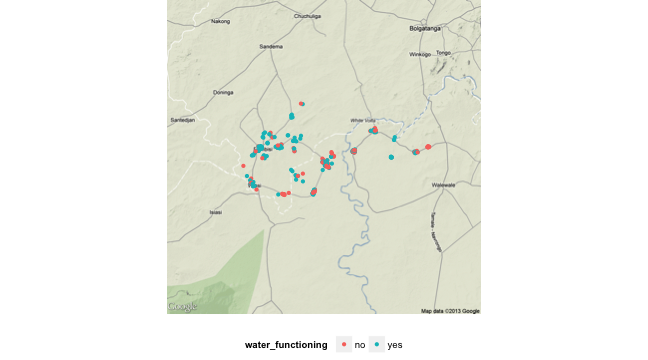
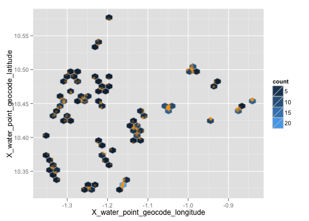
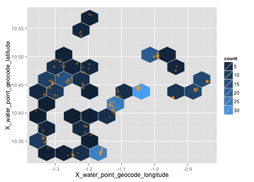
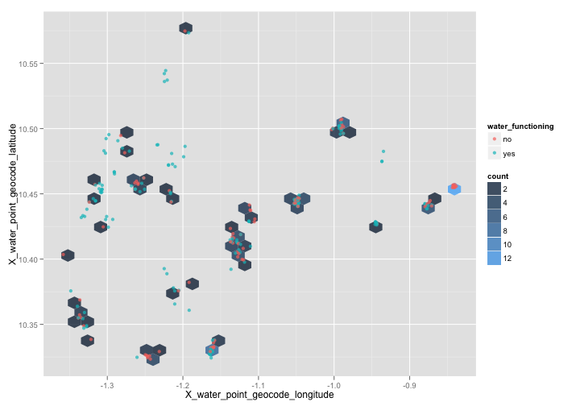

formhub.R makes is easy to download and work with datasets on formhub.R. In this showcase, I'll show off how formhub.R makes it easy to make printable maps… just like the ones available on formhub.org for you to view.
This time, we'll be using a water point dataset from Northern Ghana. I am not at liberty to show you the full dataset, but maps aren't a problem. Plus, that gives me an excuse to demonstrate how formhub.R can import datasets from a file. The inputs required are two files, the csv file that makes up your data and the form.json file, which is a convenient representation of the XLSform used to collect data in the first place.
# Read north ghana water points dataset directly from saved data and form.
source("../formhub.R")
waterpoints <- formhubRead("~/Downloads/_08_Water_points_train3_2012_09_06.csv",
"~/Downloads/_08_Water_points_train3.json")
A quick str(waterpoints) can verify that the type conversions have been done properly; output excluded for brevity here.
Lets get to maps! A quick one just to help us get the lay of the land (longitude / latitudes are just x / y co-ordinates after all).
library(ggplot2)
qplot(data = waterpoints, x = X_water_point_geocode_longitude, y = X_water_point_geocode_latitude)

In order to get a real map background in there, we'll use the ggmap package, and create a baselayer for our mapping purposes.
library(ggmap)
center_point <- c(lon = mean(waterpoints$X_water_point_geocode_longitude,
na.rm = T), lat = mean(waterpoints$X_water_point_geocode_latitude, na.rm = T))
ngbaselayer <- ggmap(get_map(location = center_point, source = "google",
filename = "maptemp", zoom = 10), extent = "device") + opts(legend.position = "bottom")
Now, we can think about a property to visualize–how about the water_functional attribute (which corresponds to the question: Is the water source able to provide water right now?)
ngbaselayer + geom_point(data = waterpoints, aes(x = X_water_point_geocode_longitude,
y = X_water_point_geocode_latitude, color = water_functioning))

And here is a hexagonal binning of the counts in this dataset (with points laid over transparently), with two different bin sizes:
ngbaselayer +
stat_binhex(data=waterpoints, color="grey", # bins = 30 by default
aes(x=X_water_point_geocode_longitude, y=X_water_point_geocode_latitude)) +
geom_point(data=waterpoints, color="orange", alpha=0.3,
aes(x=X_water_point_geocode_longitude, y=X_water_point_geocode_latitude))

ngbaselayer +
stat_binhex(data=waterpoints, color="grey", bins=10,
aes(x=X_water_point_geocode_longitude, y=X_water_point_geocode_latitude)) +
geom_point(data=waterpoints, color="orange", alpha=0.3,
aes(x=X_water_point_geocode_longitude, y=X_water_point_geocode_latitude))

Unfortunately, I'm not quite sure how we can replicate the formhub.org-style density hexbins, which tell us areas in which a high proportion of existing water points are non-functional. However, we can map where there is a prepondenderence of non-functioning water points within our set, overlaying all points for contrast:
only_functioning_points <- subset(waterpoints, water_functioning ==
"yes")
ngbaselayer + stat_binhex(data = only_functioning_points, aes(x = X_water_point_geocode_longitude,
y = X_water_point_geocode_latitude)) + geom_point(data = waterpoints, alpha = 0.3,
color = "orange", aes(x = X_water_point_geocode_longitude, y = X_water_point_geocode_latitude))

Pretty cool, eh?
In Making Maps II with formhub.R, we will show how to make choropleth maps using shapefiles downloaded from gadm.